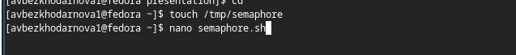
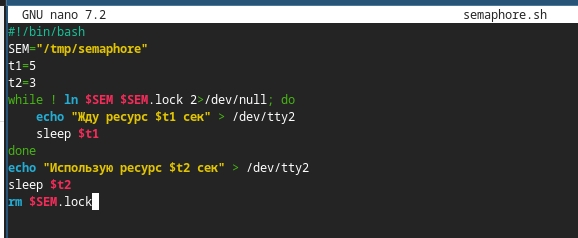
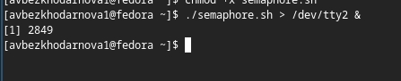
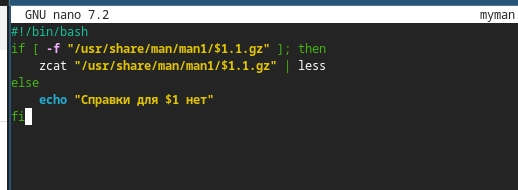
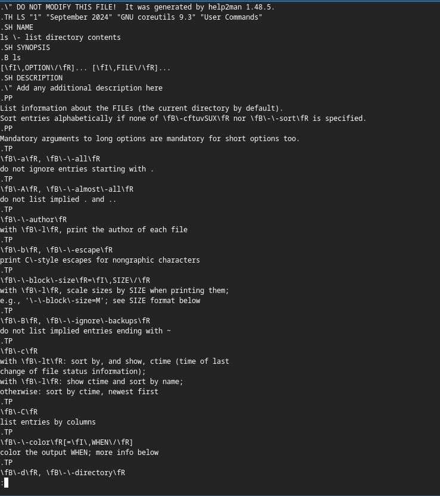
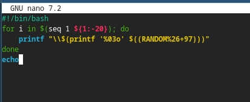
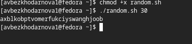

Лабораторная работа №14
Архитектура компьютеров
Безходарнова А.В.
Российский университет дружбы народов, Москва, Россия
25 апреля 2026
Информация
Докладчик
- Безходарнова Алиса Викторовна
- Студентка НКАбд-01-25
- Алiса
- Российский университет дружбы народов
- 1032253545@rudn.ru

Цель работы
Изучить основы программирования в оболочке ОС UNIX. Научиться писать более сложные командные файлы с использованием логических управляющих конструкций и циклов.
Задание
- Написать командный файл, реализующий упрощённый механизм семафоров. Ко- мандный файл должен в течение некоторого времени t1 дожидаться освобождения ресурса, выдавая об этом сообщение, а дождавшись его освобождения, использовать его в течение некоторого времени t2<>t1, также выдавая информацию о том, что ресурс используется соответствующим командным файлом (процессом). Запустить командный файл в одном виртуальном терминале в фоновом режиме, перенаправив его вывод в другой (> /dev/tty#, где # — номер терминала куда перенаправляется вывод), в котором также запущен этот файл, но не фоновом, а в привилегированном режиме. Доработать программу так, чтобы имелась возможность взаимодействия трёх и более процессов.
- Реализовать команду man с помощью командного файла. Изучите содержимое ката- лога /usr/share/man/man1. В нем находятся архивы текстовых файлов, содержащих справку по большинству установленных в системе программ и команд. Каждый архив можно открыть командой less сразу же просмотрев содержимое справки. Командный файл должен получать в виде аргумента командной строки название команды и в виде результата выдавать справку об этой команде или сообщение об отсутствии справки, если соответствующего файла нет в каталоге man1.
- Используя встроенную переменную $RANDOM, напишите командный файл, генерирую- щий случайную последовательность букв латинского алфавита. Учтите, что $RANDOM выдаёт псевдослучайные числа в диапазоне от 0 до 32767
Теоретическое введение
Командный процессор (командная оболочка, интерпретатор команд shell) — это программа, позволяющая пользователю взаимодействовать с операционной системой компьютера. В операционных системах типа UNIX/Linux наиболее часто используются следующие реализации командных оболочек: – оболочка Борна (Bourne shell или sh) — стандартная командная оболочка UNIX/Linux, содержащая базовый, но при этом полный набор функций; – С-оболочка (или csh) — надстройка на оболочкой Борна, использующая С-подобный синтаксис команд с возможностью сохранения истории выполнения команд; – оболочка Корна (или ksh) — напоминает оболочку С, но операторы управления програм- мой совместимы с операторами оболочки Борна; – BASH — сокращение от Bourne Again Shell (опять оболочка Борна), в основе своей совмещает свойства оболочек С и Корна (разработка компании Free Software Foundation). POSIX (Portable Operating System Interface for Computer Environments) — набор стандартов описания интерфейсов взаимодействия операционной системы и прикладных программ. Стандарты POSIX разработаны комитетом IEEE (Institute of Electrical and Electronics Engineers) для обеспечения совместимости различных UNIX/Linux-подобных операционных систем и переносимости прикладных программ на уровне исходного кода. POSIX-совместимые оболочки разработаны на базе оболочки Корна.
Выполнение лабораторной работы
Создаю файл

Пишу программу

Делаю файл исполняемым

Создаю второй программный код

Запускаю его и проверяю работу

Также пишу последний программный код

Запускаю код, проверяя его работу

Вывод
В ходе данной лабораторной работы я изучила основы программирования в облочке OC UNIX. Научилась писать более сложные командные файлы с использованием логических управляющих конструкций и файлов
Контрольные вопросы
- Найдите синтаксическую ошибку в следующей строке: Там нужно поставить пробелы
- Как объединить (конкатенация) несколько строк в одну? Просто написать переменные подряд
- Найдите информацию об утилите seq. Какими иными способами можно реализовать её функционал при программировании на bash? seq генерирует числа; замену можно сделать через for
- Какой результат даст вычисление выражения $((10/3))? 3 Целочисленное деление
- Укажите кратко основные отличия командной оболочки zsh от bash. zsh имеет автодополнение, исправление опечаток и расширенные glob-паттерны
- Проверьте, верен ли синтаксис данной конструкции 1 for ((a=1; a <= LIMIT; a++)) Синтаксис верен, работает в bash
- Сравните язык bash с какими-либо языками программирования. Какие преимущества у bash по сравнению с ними? Какие недостатки? Преимущества: работа с процессами и файлами напрямую; недостатки: медленный, плох для математики и сложных структур